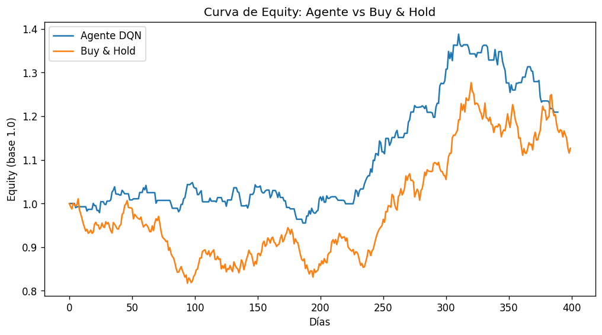
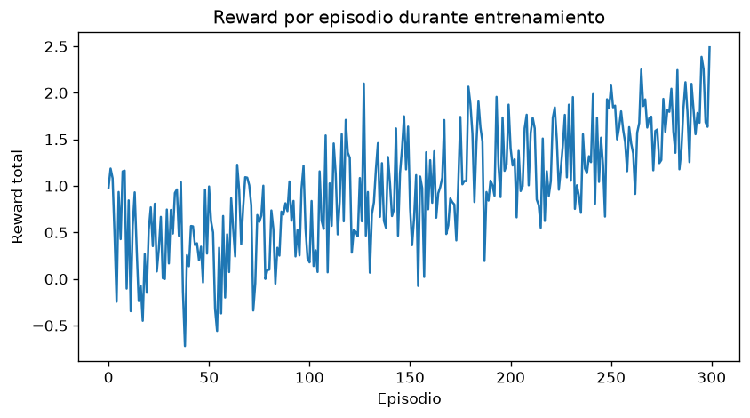
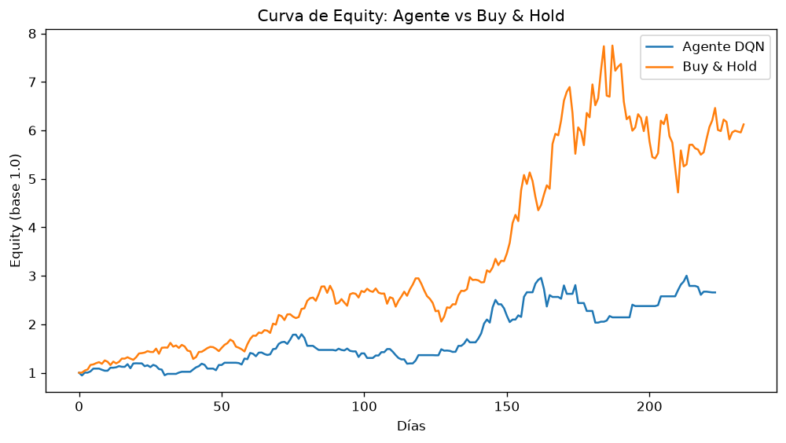
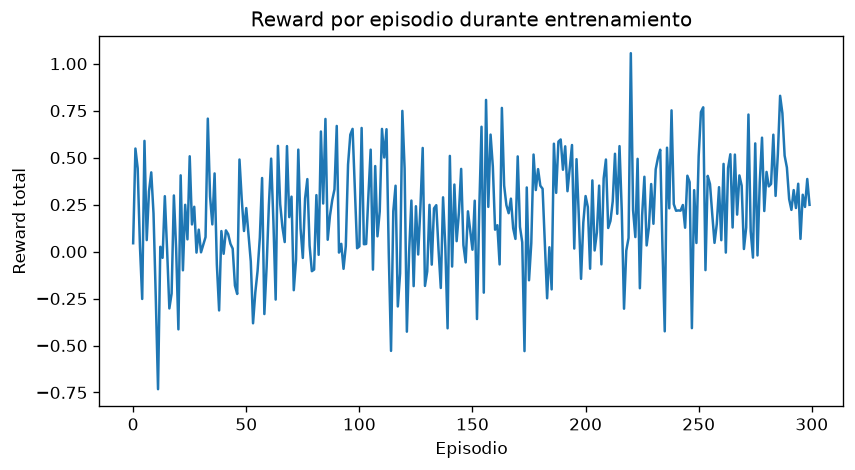
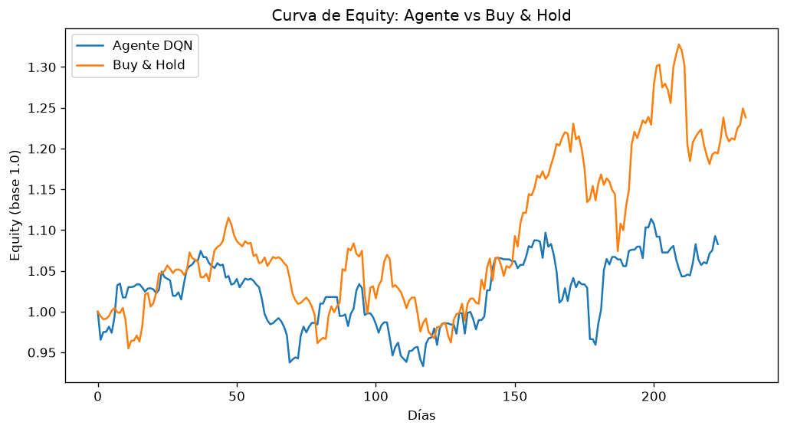
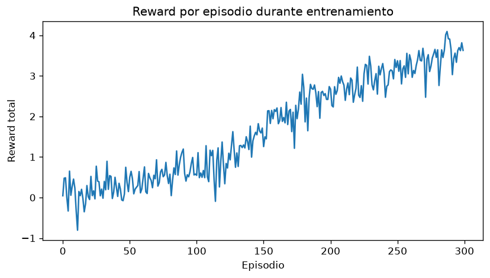
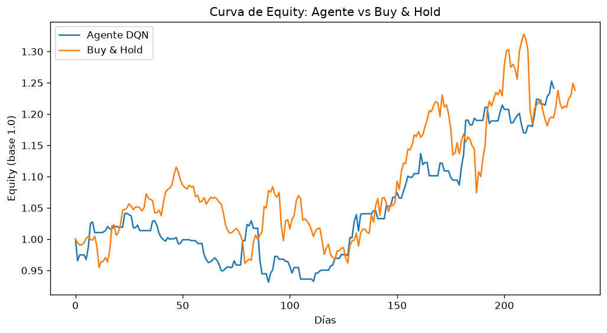
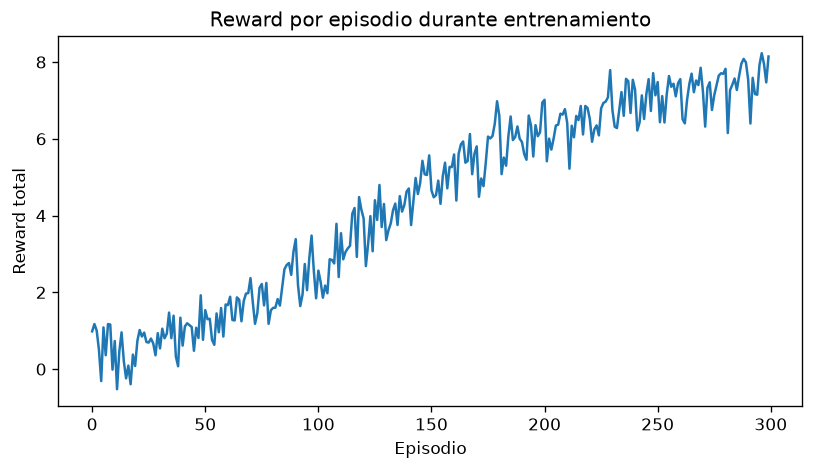
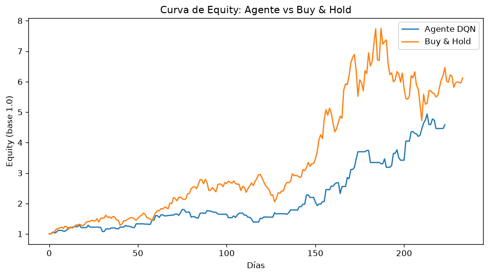

Diseño, implementación y evaluación empírica en datos sintéticos y reales · Septiembre 2026
Presentamos el diseño e implementación de un agente de Deep Q-Learning (DQN) aplicado a la decisión binaria de posición (largo / plano) sobre series de precios diarias. El agente, incluyendo la red neuronal, se implementó íntegramente en NumPy, sin frameworks de diferenciación automática, con una arquitectura de profundidad configurable. Se construyó además un marco de backtesting con cuatro métricas estándar de evaluación financiera (retorno total, ratio de Sharpe, máximo drawdown, y win rate), comparando el desempeño del agente contra una estrategia de referencia de buy & hold. Se evaluó el sistema en tres escenarios de datos (una serie sintética y dos series reales, MU y AAPL) y dos arquitecturas de red (una capa oculta vs. tres capas ocultas). Con la red superficial, el agente superó al benchmark únicamente en el escenario sintético, rindiendo por debajo en ambos escenarios reales. Al aumentar la profundidad de la red, el desempeño mejoró sustancialmente en los escenarios reales, alcanzando un ratio de Sharpe superior al del benchmark en ambos activos, aunque sin superarlo en retorno total absoluto. Discutimos las implicancias de este hallazgo -que separa la capacidad de representación del modelo del efecto del régimen de mercado- junto con las limitaciones metodológicas del estudio, en particular el reducido número de episodios de entrenamiento y la ausencia de validación walk-forward.
Palabras clave: reinforcement learning, DQN, trading algorítmico, backtesting, ratio de Sharpe
El aprendizaje por refuerzo profundo (Deep Reinforcement Learning, DRL) combina el marco de decisión secuencial del aprendizaje por refuerzo con la capacidad de aproximación de funciones de las redes neuronales profundas, permitiendo a un agente aprender políticas de decisión directamente de la interacción con un entorno, sin necesidad de una tabla de valores explícita para cada estado posible [1]. Este trabajo aplica dicho marco al problema de asignación binaria de posición en un activo financiero: en cada instante de tiempo, el agente decide si mantener una posición larga (comprado) o plana (sin exposición), con el objetivo de maximizar el retorno acumulado ajustado por el costo de transacción de cambiar de posición.
El objetivo de este trabajo no es proponer una estrategia de trading lista para producción, sino documentar de forma honesta el proceso de construcción, entrenamiento y evaluación crítica de un agente DRL, incluyendo los casos en los que su desempeño resultó inferior al de la estrategia de referencia. Sostenemos que esta transparencia es metodológicamente más valiosa que reportar únicamente resultados favorables.
El entorno se modela como un proceso de decisión markoviano simplificado. Dada una serie de precios de cierre \(P = (p_0, p_1, \dots, p_T)\), definimos el retorno diario como:
Intuición: "¿qué porcentaje subió o bajó el precio de un día al siguiente?" - es el cambio absoluto \((p_{t+1}-p_t)\) expresado en relación al precio de partida, para que el resultado sea comparable entre activos de distinto valor nominal.
El espacio de acciones es discreto y binario, \(a_t \in \{0, 1\}\), donde \(0\) representa la posición plana y \(1\) la posición larga. El estado observado por el agente en el instante \(t\) es la concatenación de la ventana de las últimas \(w\) observaciones de retorno junto con la posición actual:
Intuición: el agente no ve toda la historia de precios, solo una "ventanita" de los últimos \(w\) retornos diarios, más un dato de memoria: si ya estaba comprado o no. \(\mathbb{R}^{w+1}\) simplemente indica que es un vector de \(w+1\) números reales (los \(w\) retornos, más la posición).
La recompensa combina el retorno efectivamente capturado por la posición mantenida con una penalización de costo de transacción \(c\) aplicada únicamente cuando la acción implica un cambio de posición respecto al paso anterior:
Intuición: si el agente está en posición larga (\(a_t=1\)), se "embolsa" el retorno del día (\(r_t\)); si está plano (\(a_t=0\)), ese término se anula y no gana ni pierde nada. El segundo término solo se activa (resta \(c\)) el día en que el agente cambia de posición respecto al día anterior - es el costo de "entrar" o "salir" del mercado.
En los experimentos reportados, \(w = 10\) y \(c = 0.0005\) (5 puntos básicos por cambio de posición).
El agente aproxima la función de valor-acción \(Q(s,a)\) mediante un perceptrón multicapa de profundidad configurable, implementado sin librerías de diferenciación automática. Dada una lista de tamaños de capa \((n_0, n_1, \dots, n_L)\), con \(n_0 = w+1\) (dimensión del estado) y \(n_L = 2\) (número de acciones), el forward pass se define recursivamente para cada capa \(i = 1, \dots, L\):
Intuición: cada capa hace lo mismo -multiplica su entrada por una matriz de pesos, suma un sesgo, y "curva" el resultado con \(\tanh\)- y pasa el resultado a la siguiente. La única excepción es la última capa (\(i=L\)), que se deja sin curvar, porque su salida representa valores Q y estos pueden ser cualquier número real, no solo el rango \((-1,1)\) que produce \(\tanh\).
con \(a^{(0)} = s\) (el estado de entrada) y \(a^{(L)} = Q(s,\cdot)\) (la salida final). Se evaluaron dos configuraciones de profundidad: una red superficial de una capa oculta de 64 unidades (\(L=2\)), y una red profunda de tres capas ocultas de 64 unidades cada una (\(L=4\)).
El entrenamiento sigue el algoritmo DQN estándar [2]: se mantiene una red objetivo \(Q_{\theta^-}\), actualizada periódicamente por copia directa de los pesos de la red principal \(Q_\theta\) (sin promediado exponencial), y un buffer de repetición de experiencia del cual se muestrean minibatches de forma independiente e idénticamente distribuida para romper la correlación temporal de las transiciones consecutivas. El objetivo de entrenamiento (target TD) para una transición \((s, a, r, s')\) es:
Intuición: "lo que debería haber predicho la red" es la recompensa real que se obtuvo (\(r\)) más una estimación de cuánto vale el mejor futuro posible desde el estado siguiente. Se usa la red objetivo (y no la red que se está actualizando) para estimar ese futuro, porque hacerlo con la misma red que se entrena en simultáneo generaría un objetivo que se mueve constantemente, dificultando la convergencia.
y los parámetros \(\theta = \{W_i, b_i\}_{i=1}^{L}\) se actualizan minimizando el error cuadrático medio \(\mathcal{L} = \big(Q_\theta(s,a) - y\big)^2\) mediante retropropagación manual a través de todas las capas (regla de la cadena aplicada capa por capa, de salida a entrada) y el optimizador Adam [3]. Se usó \(\gamma = 0.99\).
Se empleó una política \(\varepsilon\)-greedy con decaimiento exponencial en función del episodio \(e\):
Intuición: al principio (\(e=0\)) el agente explora siempre (\(\varepsilon=1.0\), decisiones 100% al azar, para conocer el entorno). A medida que \(e\) crece, \(\rho^e\) se va achicando geométricamente y \(\varepsilon\) baja con él - el agente confía cada vez más en lo aprendido. El \(\max(\varepsilon_{\min}, \cdot)\) evita que la exploración llegue a cero del todo, para no quedar atrapado en una política subóptima sin poder corregirla.
Dada una curva de equity \(E = (E_0, E_1, \dots, E_n)\) con \(E_0 = 1\) (el equity es el valor del portafolio, expresado como múltiplo del capital inicial), se definieron cuatro métricas:
Retorno total - la ganancia o pérdida porcentual de punta a punta del período:
Ratio de Sharpe (anualizado, sobre los retornos diarios \(r_1, \dots, r_n\) de la curva de equity) - el retorno promedio obtenido por cada unidad de riesgo (volatilidad) asumida:
Intuición: dos estrategias pueden tener el mismo retorno promedio, pero si una lo logra con altibajos mucho más bruscos (\(\sigma_r\) grande), es "peor" en términos de riesgo. El Sharpe penaliza esa volatilidad dividiendo por ella; el \(\sqrt{252}\) solo reescala el número a una base anual comparable entre estrategias, sin cambiar cuál es mejor que cuál.
Máximo drawdown - la peor caída porcentual sufrida desde un máximo histórico, en cualquier punto del período:
Intuición: en cada día, se compara el equity actual contra el mayor valor visto hasta ese momento (nunca contra el máximo de toda la serie, incluyendo el futuro). Eso da, día a día, "cuánto llevo perdido desde mi mejor momento hasta ahora". El máximo drawdown es la peor de esas caídas en todo el período -el escenario más doloroso que atravesó la estrategia, aunque después se haya recuperado.
Win rate - la proporción de operaciones ganadoras sobre el total:
Intuición: los retornos diarios dentro de una misma operación se multiplican entre sí (se componen), no se suman -igual que el interés compuesto-, porque cada día parte del capital ya modificado por el día anterior. Si ese resultado compuesto de la operación es positivo, cuenta como ganadora; el win rate es simplemente qué fracción de las \(N\) operaciones cumplió esa condición.
En cada escenario, la serie de precios se dividió temporalmente en un 80% para entrenamiento y un 20% final reservado exclusivamente para evaluación (backtest), sin exposición del agente a dichos datos durante el entrenamiento. Se entrenó por 300 episodios, con sincronización de la red objetivo cada 10 episodios.
Se generó una serie de 2000 observaciones mediante movimiento geométrico browniano segmentado en cuatro regímenes de deriva y volatilidad distintos, con el fin de simular alternancia de tendencias alcistas, bajistas y de baja direccionalidad.
| Métrica | Agente DQN | Buy & Hold |
|---|---|---|
| Retorno total | 20.94% | 12.67% |
| Ratio de Sharpe | 0.977 | 0.485 |
| Máx. drawdown | −12.87% | −19.14% |
| Win rate | 53.95% | 100%* |
* Con una única operación de duración completa, el win rate de buy & hold no es directamente comparable con el del agente, que ejecuta múltiples operaciones cortas.

En este escenario, el agente superó al benchmark en las cuatro dimensiones de retorno y riesgo evaluadas (excepto win rate, de comparabilidad limitada). La curva de recompensa por episodio (no mostrada para este escenario) presentó una tendencia de mejora débil y ruidosa, consistente con un entrenamiento parcialmente convergido.
Se utilizaron precios de cierre diarios reales descargados mediante la API de Yahoo Finance (biblioteca
yfinance), correspondientes al período 2022–2026.


| Métrica | Agente DQN | Buy & Hold |
|---|---|---|
| Retorno total | 165.67% | 512.30% |
| Ratio de Sharpe | 1.927 | 2.774 |
| Máx. drawdown | −33.87% | −39.10% |
| Win rate | 57.89% | 100%* |
A diferencia del escenario sintético, en este caso el agente obtuvo un desempeño sustancialmente inferior al benchmark en retorno total y Sharpe: la estrategia de buy & hold multiplicó el capital inicial por 6.12×, frente a 2.66× del agente. Es de notar que, pese a este resultado, el agente sí logró un máximo drawdown menor (−33.87% vs. −39.10%), consistente con su comportamiento de reducción de exposición -insuficiente, sin embargo, para compensar el costo de oportunidad de las salidas en un mercado con esta magnitud de tendencia alcista.


| Métrica | Agente DQN | Buy & Hold |
|---|---|---|
| Retorno total | 8.29% | 23.81% |
| Ratio de Sharpe | 0.538 | 1.064 |
| Máx. drawdown | −13.15% | −13.80% |
| Win rate | 53.12% | 100%* |
El patrón se repite: el agente (equity final 1.083×) fue superado por buy & hold (equity final 1.238×) tanto en retorno como en Sharpe, aunque con una brecha relativa menor que en el escenario MU, proporcional a la menor intensidad de la tendencia alcista subyacente. Nuevamente, el drawdown del agente resultó marginalmente inferior al del benchmark (−13.15% vs. −13.80%), un patrón consistente a través de los tres escenarios: el agente reduce el riesgo de cola, pero ese beneficio no alcanza a compensar el costo de oportunidad en regímenes alcistas sostenidos.
Motivados por el desempeño inferior del agente frente al benchmark en ambos escenarios reales (secciones 3.2 y 3.3), se evaluó si dicho resultado se debía al régimen de mercado del período de prueba o a una capacidad de representación insuficiente de la red superficial (\(L=2\), una capa oculta). Se repitió el entrenamiento y backtest en ambos activos reales, sin ningún otro cambio metodológico, sustituyendo únicamente la arquitectura por una red profunda de tres capas ocultas (\(L=4\)).
| Métrica | Agente (1 capa) | Agente (3 capas) | Buy & Hold |
|---|---|---|---|
| Retorno total | 165.67% | 358.47% | 512.30% |
| Ratio de Sharpe | 1.927 | 2.894 | 2.774 |
| Máx. drawdown | −33.87% | −22.89% | −39.10% |
| Win rate | 57.89% | 57.38% | 100%* |
| Métrica | Agente (1 capa) | Agente (3 capas) | Buy & Hold |
|---|---|---|---|
| Retorno total | 8.29% | 24.15% | 23.81% |
| Ratio de Sharpe | 0.538 | 1.503 | 1.064 |
| Máx. drawdown | −13.15% | −10.56% | −13.80% |
| Win rate | 53.12% | 56.60% | 100%* |




El efecto es consistente y sustancial en ambos activos: la red profunda mejoró las cuatro métricas evaluadas respecto de la red superficial, sin excepción, en los dos escenarios reales. Particularmente notable es que, en ambos casos, el ratio de Sharpe del agente con la red profunda superó al de buy & hold (2.894 vs. 2.774 en MU; 1.503 vs. 1.064 en AAPL) -algo que no se había observado en ningún escenario real con la arquitectura superficial. Esto sugiere que la capacidad de representación insuficiente de la red de una capa era, al menos parcialmente, la causa del desempeño inferior reportado en las secciones 3.2 y 3.3, más allá del régimen de mercado del período evaluado.
Cabe señalar que el retorno total del agente continúa por debajo del de buy & hold en ambos escenarios reales, incluso con la red profunda. La mejora se concentra en la relación riesgo-retorno (Sharpe) y en el control de drawdown, no en el retorno absoluto capturado durante la tendencia alcista -una distinción relevante para cualquier evaluación de la utilidad práctica del agente, dependiendo de si el criterio de éxito prioriza retorno crudo o retorno ajustado por riesgo.
Los tres escenarios evaluados sugieren un patrón consistente: el desempeño relativo del agente frente al benchmark de buy & hold está fuertemente condicionado por el régimen del período de prueba. En el escenario sintético -construido explícitamente con alternancia de regímenes, incluyendo tramos bajistas y de baja direccionalidad- el agente pudo capturar valor evitando parte de una corrección. En ambos escenarios con datos reales, el período de test coincidió con tendencias alcistas sostenidas, condición en la cual una estrategia que introduce salidas de mercado (aun cuando reduzcan el riesgo marginal) tiende estructuralmente a rendir por debajo de una estrategia de exposición constante.
Este hallazgo, sin embargo, se matiza a la luz de los resultados de la Sección 4: al aumentar la profundidad de la red de una a tres capas ocultas, el ratio de Sharpe del agente superó al del benchmark en ambos activos reales, revirtiendo parcialmente esta lectura inicial. El desempeño inferior observado con la red superficial no era, entonces, exclusivamente atribuible al régimen de mercado, sino también, y quizás principalmente, a una capacidad de representación insuficiente para capturar la señal necesaria en los datos reales. El retorno total absoluto, no obstante, permaneció por debajo del benchmark en ambos casos incluso con la red profunda -sugiriendo que el régimen de mercado sí impone un límite estructural sobre cuánto retorno absoluto puede capturar una estrategia de rotación, aun cuando su perfil de riesgo-retorno mejore sustancialmente.
Esta observación no debe interpretarse como una falla del agente per se, sino como una propiedad esperable de cualquier estrategia de rotación en mercados alcistas de baja volatilidad relativa: el costo de oportunidad de las salidas puede superar el valor de la protección que ofrecen, incluso cuando el agente identifica correctamente los momentos de mayor riesgo relativo. Es una observación consistente con la literatura de gestión de riesgo, donde estrategias de reducción de exposición (de-risking) compiten en dos dimensiones distintas -retorno absoluto y retorno ajustado por riesgo- que no siempre favorecen a la misma estrategia.
Es notable, adicionalmente, que la curva de aprendizaje del escenario MU con la red superficial (Figura 2) mostró una convergencia considerablemente más limpia que la del escenario AAPL (Figura 4), pese a que el agente terminó rindiendo por debajo del benchmark en ambos con esa arquitectura. Esto ilustra una distinción metodológica importante: una curva de entrenamiento saludable no garantiza que la política aprendida supere al benchmark elegido; la capacidad del modelo para representar la política óptima es una condición necesaria adicional, independiente de la calidad de la convergencia del entrenamiento.
Se implementó y evaluó un agente DQN de trading, íntegramente en NumPy, con arquitectura de profundidad configurable, junto con un marco de backtesting cuantitativo estándar. Los resultados empíricos revelan dos hallazgos entrelazados. Primero, el desempeño relativo del agente frente a la estrategia pasiva depende del régimen de mercado evaluado: en mercados alcistas sostenidos, el retorno absoluto de una estrategia de rotación tiende a quedar por debajo de la exposición constante. Segundo, y de forma más novedosa, gran parte de la brecha observada inicialmente en los escenarios reales resultó atribuible a una capacidad de representación insuficiente de la red superficial: al profundizar la arquitectura de una a tres capas ocultas, el agente alcanzó un ratio de Sharpe superior al de buy & hold en ambos activos reales evaluados, revirtiendo la conclusión inicial sobre su competitividad. Consideramos que esta progresión -de un resultado aparentemente negativo a uno matizado y parcialmente positivo, mediante una mejora de arquitectura simple y bien fundamentada- constituye en sí misma una lección metodológica relevante: antes de atribuir el desempeño de un agente de RL al régimen del entorno, conviene descartar primero limitaciones de capacidad del modelo. Aun así, la ausencia de validación walk-forward y multi-régimen impide afirmar con certeza que estos resultados generalicen más allá de las muestras evaluadas, y el buy & hold sigue constituyendo, en términos de retorno absoluto, un benchmark difícil de superar en mercados con tendencia alcista sostenida.
[1] Sutton, R. S., & Barto, A. G. (2018). Reinforcement Learning: An Introduction (2nd ed.). MIT Press.
[2] Mnih, V., et al. (2015). Human-level control through deep reinforcement learning. Nature, 518(7540), 529–533.
[3] Kingma, D. P., & Ba, J. (2015). Adam: A Method for Stochastic Optimization. ICLR.